وثائق بخط اليد
نماذج أرشيفية تتضمن مبايعات ومكاتبات وإشارات إلى أطراف وشهود وتواريخ هجرية، وهي مادة أولية قابلة للقراءة والتحقيق لاحقًا.
مساحة هادئة تجمع الوثيقة والصورة والموروث الشعبي في عرض مرتب يحفظ التفاصيل ويقربها للباحث والزائر.
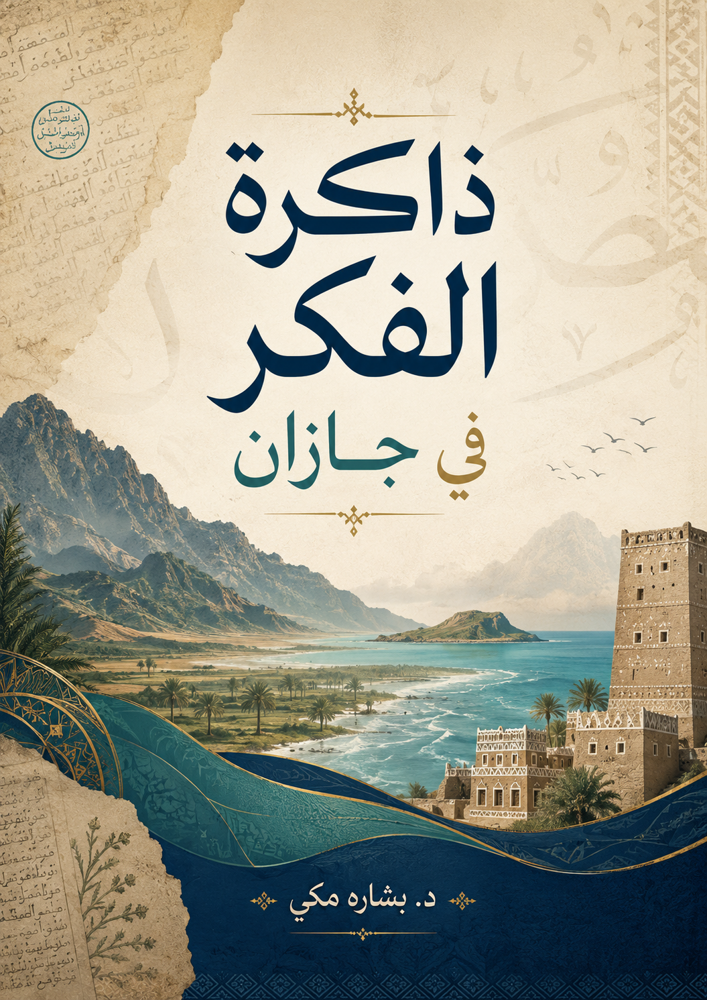
تضم الصفحة مجموعة من الوثائق الخطية، وملفين تعريفيين عن الألعاب الشعبية واللباس التراثي، ومقاطع مرئية وصورة بحرية من فرسان. جرى ترتيب الصور وتحسين عرضها للقراءة دون المساس بأصلها.
نماذج أرشيفية تتضمن مبايعات ومكاتبات وإشارات إلى أطراف وشهود وتواريخ هجرية، وهي مادة أولية قابلة للقراءة والتحقيق لاحقًا.
مواد تشرح جانبًا من الحياة اليومية: الألعاب، اللباس، الزينة، ومظاهر المناسبات.
إضافة صورة فرسان والمرئيات تمنح الموقع حضورًا بصريًا يربط الوثيقة بالمكان والبحر والإنسان.
مجموعة صور لوثائق قديمة بخط اليد. رتبت الوثائق في بطاقات متتابعة مع صور محسّنة للعرض، ويمكن فتح كل وثيقة بحجمها الكامل لمعاينة الخط والتواقيع والتواريخ.
تظهر الوثائق بوصفها سجلات ومكاتبات محلية تتصل بالأملاك والبيع والشراء والشروط والشهود، وفي بعضها تواريخ هجرية مثل 1329 و1338 و1341 و1348 تقريبًا بحسب وضوح الصورة. لم تُفرّغ الوثائق حرفيًا داخل الموقع حتى لا يُنسب نص غير محقق إلى الأصل، وإنما عُرضت بصفتها مادة أرشيفية أولية.
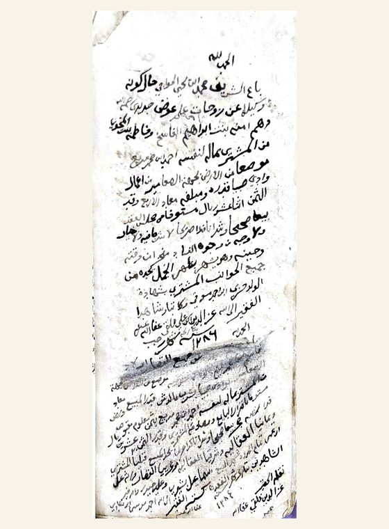
وثيقة رقم 1 صورة محسّنة للعرض — افتحيها كاملة للتكبير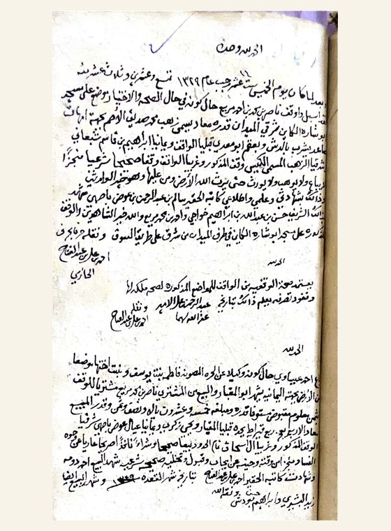
وثيقة رقم 2 صورة محسّنة للعرض — افتحيها كاملة للتكبير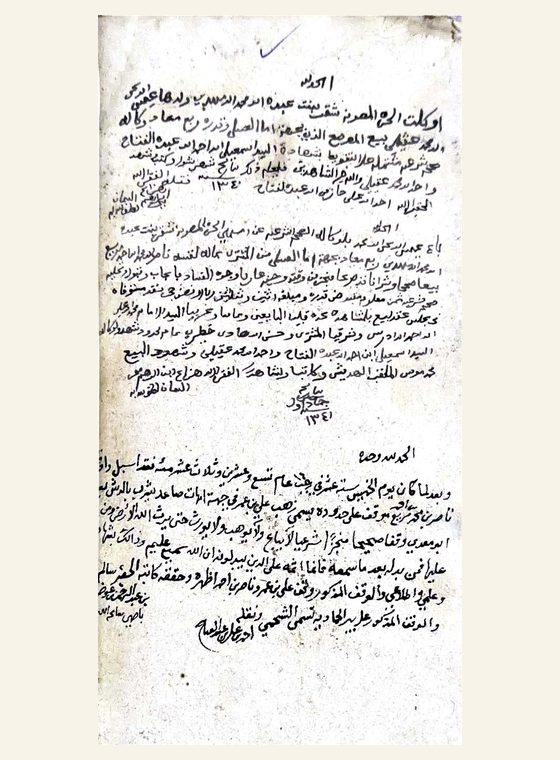
وثيقة رقم 3 صورة محسّنة للعرض — افتحيها كاملة للتكبير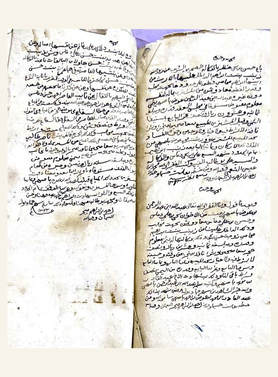
وثيقة رقم 4 صورة محسّنة للعرض — افتحيها كاملة للتكبير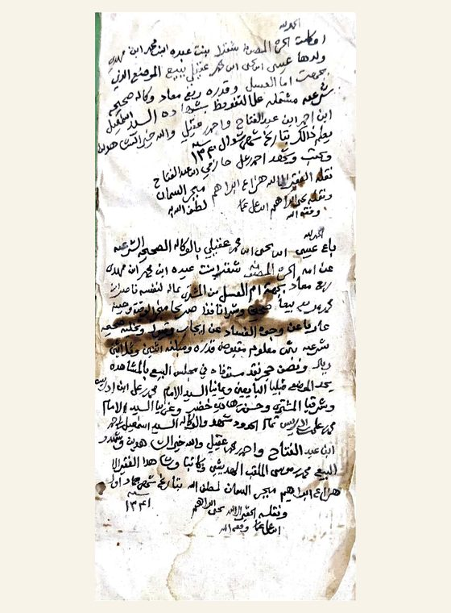
وثيقة رقم 5 صورة محسّنة للعرض — افتحيها كاملة للتكبير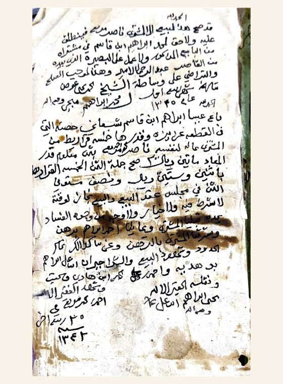
وثيقة رقم 6 صورة محسّنة للعرض — افتحيها كاملة للتكبير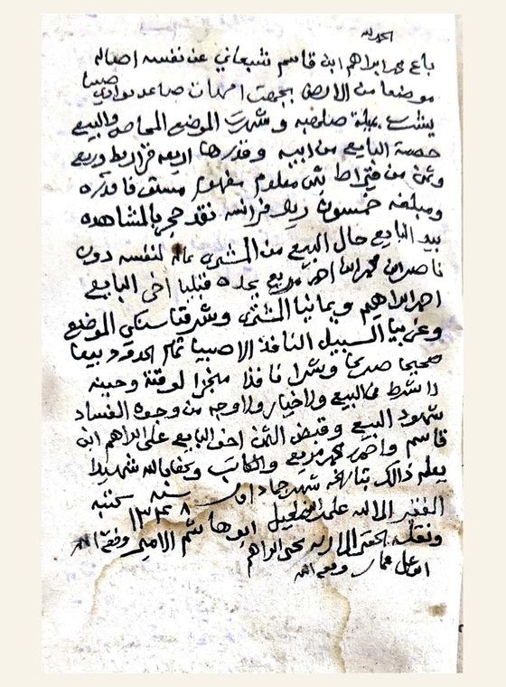
وثيقة رقم 7 صورة محسّنة للعرض — افتحيها كاملة للتكبير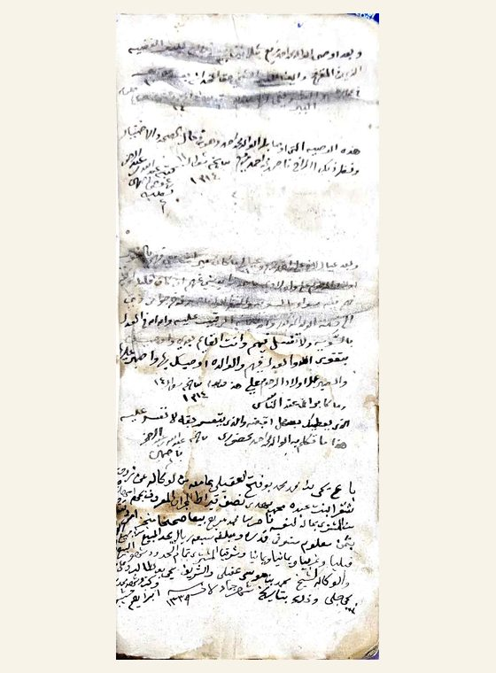
وثيقة رقم 8 صورة محسّنة للعرض — افتحيها كاملة للتكبير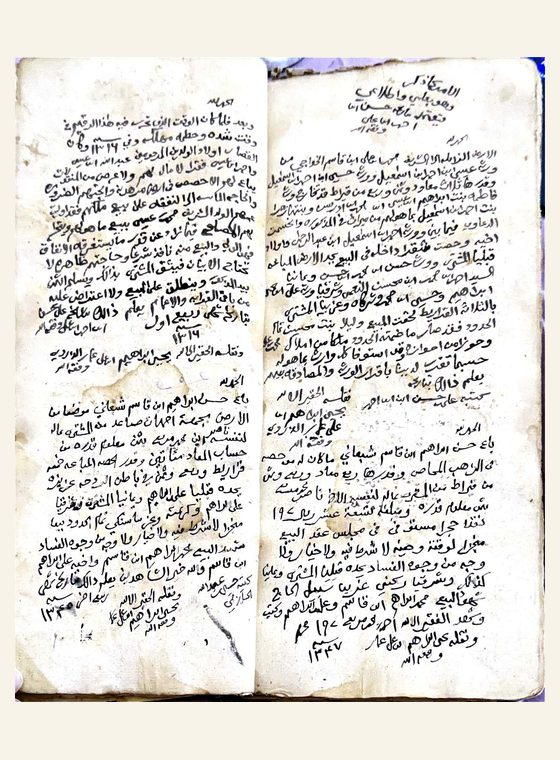
وثيقة رقم 9 صورة محسّنة للعرض — افتحيها كاملة للتكبير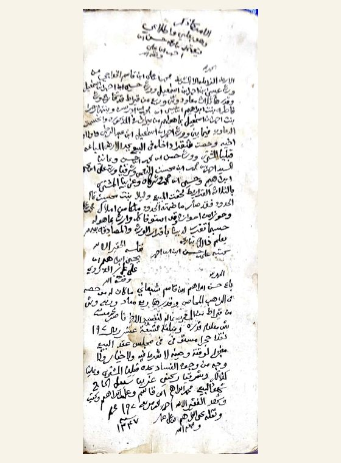
وثيقة رقم 10 صورة محسّنة للعرض — افتحيها كاملة للتكبير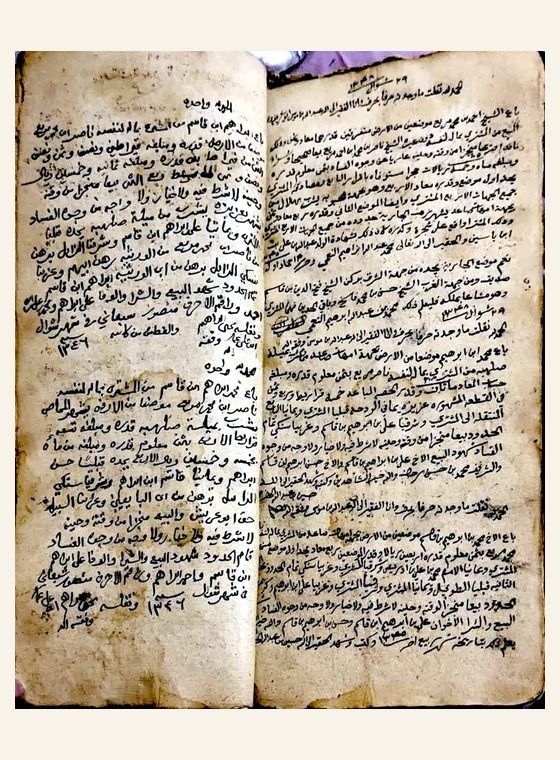
وثيقة رقم 11 صورة محسّنة للعرض — افتحيها كاملة للتكبير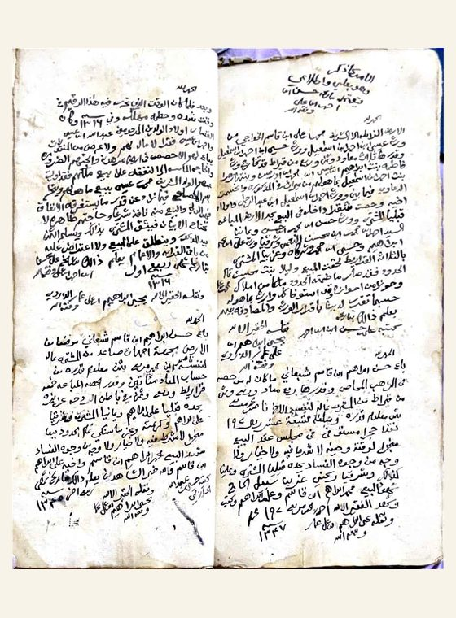
وثيقة رقم 12 صورة محسّنة للعرض — افتحيها كاملة للتكبير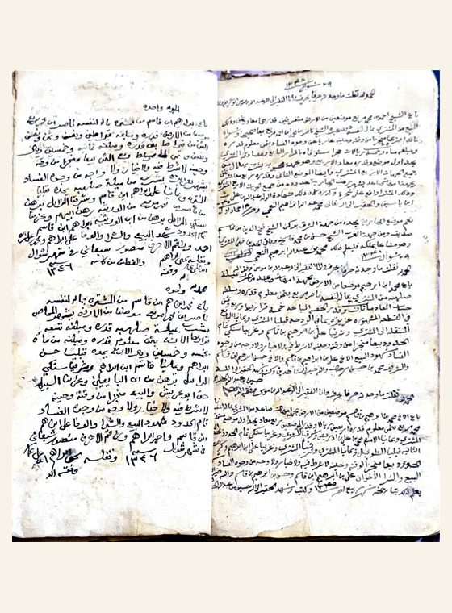
وثيقة رقم 13 صورة محسّنة للعرض — افتحيها كاملة للتكبير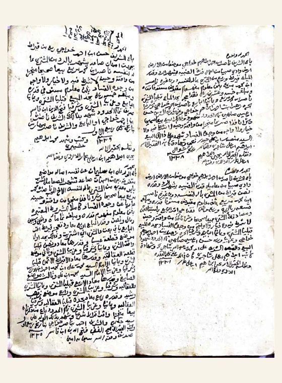
وثيقة رقم 14 صورة محسّنة للعرض — افتحيها كاملة للتكبير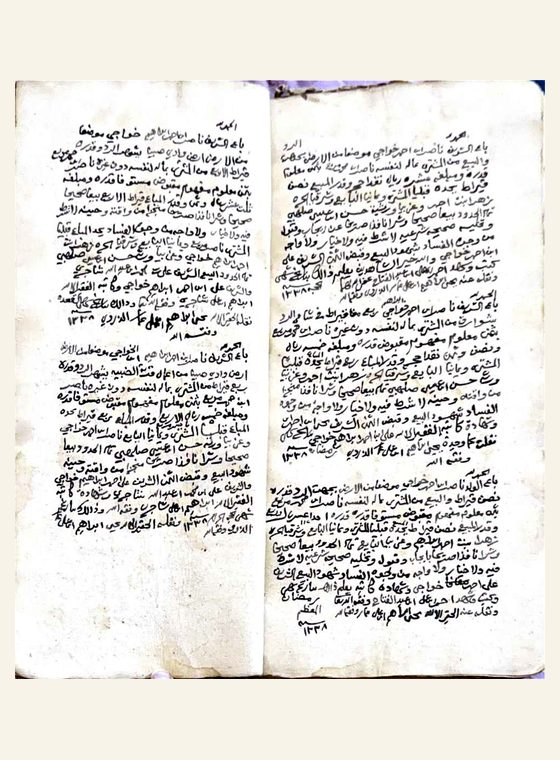
وثيقة رقم 15 صورة محسّنة للعرض — افتحيها كاملة للتكبير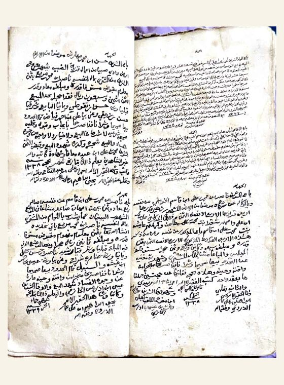
وثيقة رقم 16 صورة محسّنة للعرض — افتحيها كاملة للتكبير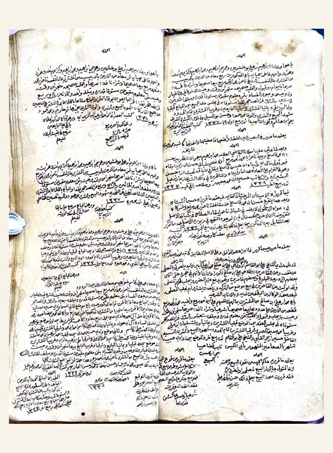
وثيقة رقم 17 صورة محسّنة للعرض — افتحيها كاملة للتكبير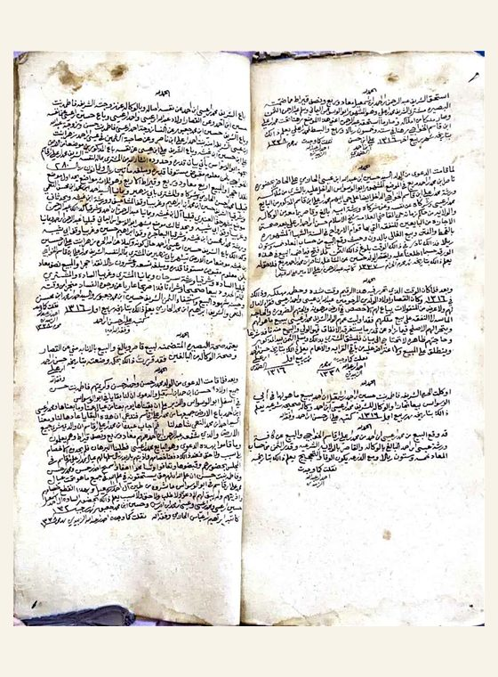
وثيقة رقم 18 صورة محسّنة للعرض — افتحيها كاملة للتكبير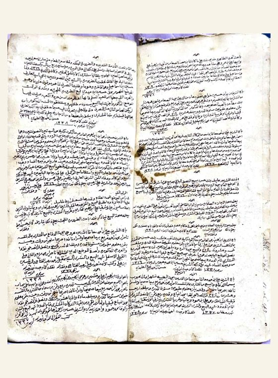
وثيقة رقم 19 صورة محسّنة للعرض — افتحيها كاملة للتكبيرأُضيفت صورة فرسان كمساحة بصرية تربط أرشيف جازان ببحرها وجزرها، وتمنح الصفحة تنوعًا بين الوثيقة الخطية والمشهد الطبيعي.
يعرض الملف الألعاب الشعبية بوصفها وسيلة ترفيه وتسلية بعد الأعمال اليومية، وتتنوع بين مهارات التفكير والقدرات العقلية، والقوة والتحدي، والمهارات الفردية والجماعية.
لعبة جماعية للشباب بين فريقين، بأدوات بسيطة مثل العصا وكرة يدوية من الأقمشة أو الخوص.
ألعاب يظهر فيها تحدي القوة، بين فرق أو أفراد، وفيها حضور للقيادة والمواجهة البدنية.
ممارسات تعتمد على اللياقة والخفة، وترتبط بالأودية والغدر وميدان السباق.
ألعاب مهارية بأدوات خشبية بسيطة، تقوم على التصويب أو دوران القطعة أطول مدة.
ألعاب تعتمد على التخمين والتركيز وخفة اليد، وتلعبها فئات مختلفة.
يجتمع فيها الترفيه الشعبي مع الذكاء وسرعة البديهة وحضور الأطفال والكبار.
يعرض القسم اللباس والزينة في جازان بين الحياة اليومية والمناسبات، مع تفصيل لألبسة الرجال والنساء والحلي والعناصر العطرية والرمزية.
السديرية، الأزر والوزر، الحوك، الحطيم، الجرفي واللحاف الدريهمي، مع اختلاف الألوان وجودة الخيوط.
اللحاف معلم رمزي للأصالة، والحزام الجلدي يثبت به الخنجر أو الجنبية.
تجمع بين تثبيت الشعر والزينة، وقد تدخل فيها النباتات العطرية أو الجلد المرصع.
المدرعة والصيغة والحلي الفضية مثل الأوضاح والمسك والخلخال والخواتم.
الكرتة للتطريز والمناسبات، والمظلة والقطاعة لتغطية الرأس والحماية والزينة.
تظهر فيها الحلي والحناء والنباتات العطرية، بوصفها جزءًا من طقوس التجمل والحضور الاجتماعي.
مقاطع مرئية مضافة ضمن الأرشيف لتوثيق الحركة والأداء والملامح الحية للموروث.
نسخ قابلة للفتح والتحميل من المواد المضافة.